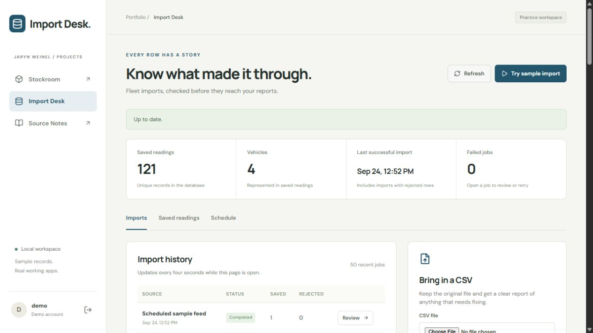
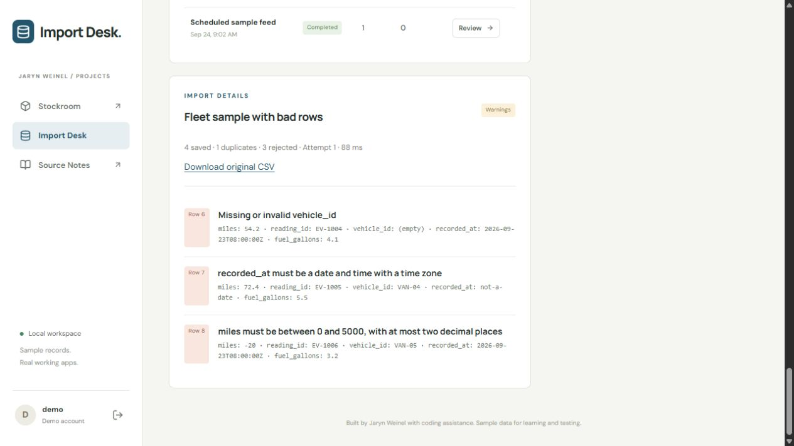
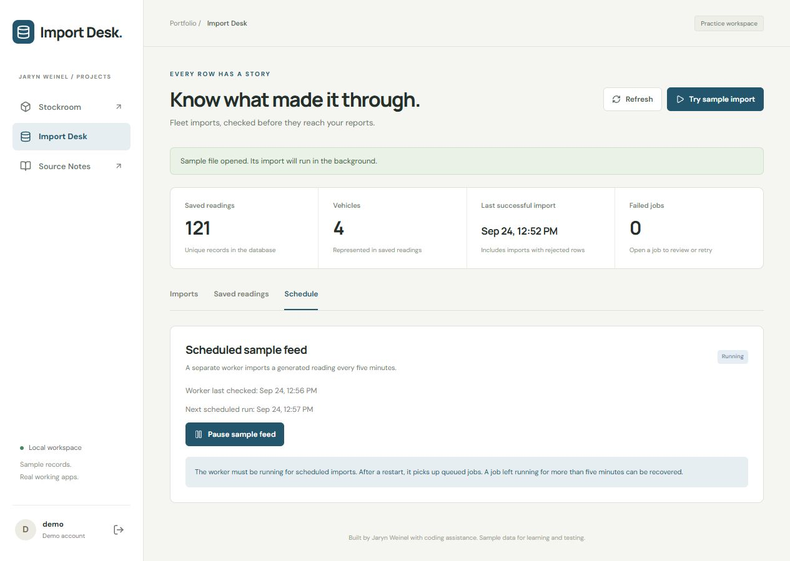

1. Keep the import history.
Each file becomes a job with its source name, raw contents, status, and row counts. A separate worker processes queued files. The dashboard also shows the latest successful import.
{kind=link}

Python / Data imports / September 2026
Bring in a CSV, see which rows passed, and keep enough detail to fix the ones that did not.
A report is only as useful as the records behind it. Import Desk uses fictional fleet readings to show what happens when a file contains duplicates, missing fields, invalid dates, or changed values.
This page shows the local app. You can run it from the public repository using the setup steps in its README.
These screenshots were taken from the running app on September 24, 2026. They show sample states; they are not a continuous recording.
Each file becomes a job with its source name, raw contents, status, and row counts. A separate worker processes queued files. The dashboard also shows the latest successful import.

The sample file produces four saved readings, one duplicate, and three rejected rows. Each rejection keeps the row number, reason, and original values. The original CSV is available from the report.

A background worker adds a generated reading every five minutes. The page shows its last check and next scheduled run. An abandoned running job can be recovered after its lease expires.

A file hash identifies identical uploads. Reading IDs identify records inside files. An existing reading with changed values is rejected rather than overwritten.
Bad row values are reported individually. A malformed CSV or changed columns fails the job and rolls back the transaction. The report makes those cases distinct.
A local test used 200,000 generated rows to query one vehicle’s recent readings. The median query time was 12.346 ms before a composite index and 0.022 ms after it. These are local synthetic timings, not production results.
The 21 checks include row validation, duplicate uploads, changed record values, malformed-file rollback, retries, abandoned-job recovery, sign-in, and CSRF protection.
On September 24, 2026, the Docker build and test workflow passed on GitHub. The build checks TypeScript and produces the frontend files. Integration checks use a separate PostgreSQL database.
The scheduled feed generates sample data. No live fleet service, Azure job, or Power BI report is connected. The backend runs locally, and the dashboard shows a limited recent history.
I used LLM help with implementation, tests, documentation, and explanations of tools I was learning. The code guides follow each request through the app so I can study the decisions and practice explaining them. These are personal projects, separate from my warehouse jobs.
{kind=link}
{kind=link}